Case study · Cabify Spain · Apr to Sep 2026
COPs Control
Every Tuesday the COPs Control review goes through the deviations of Spain's operational processes. Each owner used to open their own source, copy the numbers, and someone pasted them into a document the day before. The data arrived late, degraded on the way and had no history. I inverted the flow: the data extracts itself, keeps its history and goes to find the person. Since September the board also runs the meeting: a local model prepares each deviation, the owner proposes an action, the Performance Analyst decides and the task lands in ClickUp.
 Four scheduled tasks on the team's Mac mini run it: the daily load, the Monday alert, owner targets and the ClickUp sync. The local model runs there too, so the data never leaves it.
Four scheduled tasks on the team's Mac mini run it: the daily load, the Monday alert, owner targets and the ClickUp sync. The local model runs there too, so the data never leaves it.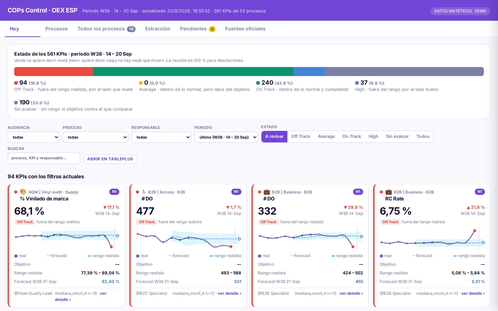
How it works
- 05:00. An Apps Script bridge reads AQM and ADP from their dashboards and a supplier sheet, and leaves three JSON files in a Drive folder that the Mac mini also sees.
- 06:00. The daily run extracts Tableau, reads the bridge files, stores every reading in PostgreSQL with its extraction date, computes range, forecast and state, and rebuilds the web data. If one source fails, only its KPIs are marked; the rest of the run continues.
- Every visit. The team web app, served by Apps Script, reads the latest data file. A link with the owner's name opens only their processes.
- Monday 12:00. One Slack message per owner with their level-1 KPIs off track or below target, at most eight, worst first.
The Tuesday check: from a deviation to a task
Since September the meeting runs on the board. The weekly check tab follows the agenda in five steps: last week's tasks, the state bar, the level-1 KPIs that deviated, the processes due this week and a to-do list. It opens filtered to whoever follows the link.
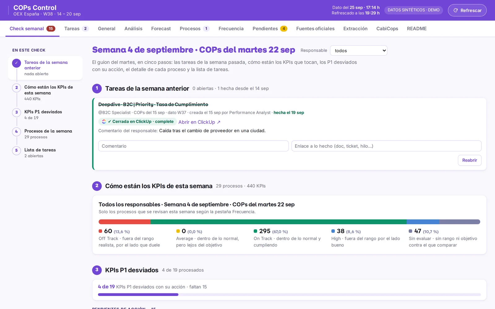
- A pre-deepdive written by a local model. At 06:05, for every level-1 KPI off track, the Mac mini computes the facts in code: how many weeks it has been out, by how much, what the forecast expected, which level-2 and level-3 metrics of the same process are also out, and whether the same KPI deviates in other processes. A qwen3.5 model on Ollama turns those facts into a short explanation and a recommendation: request a deep dive, or treat it as expected. It runs on the Mac mini itself, so the data never leaves it. If the model does not answer, the same facts produce a rule-based text, labelled as such.
- The owner proposes. Before the meeting, each owner picks one of two actions: request a deep dive, with a comment for the analyst, or mark it as expected behaviour, with the reason.
- The Performance Analyst decides. In the meeting the analyst accepts or rejects each request. A rejection keeps its reason in view of the owner.
- The task reaches ClickUp by itself. An accepted deep dive becomes a task in the team's ClickUp list, assigned to the owner and the analyst, with the team template. A job on the Mac mini creates it within about a minute and brings its status back to the board, so nobody copies anything twice.
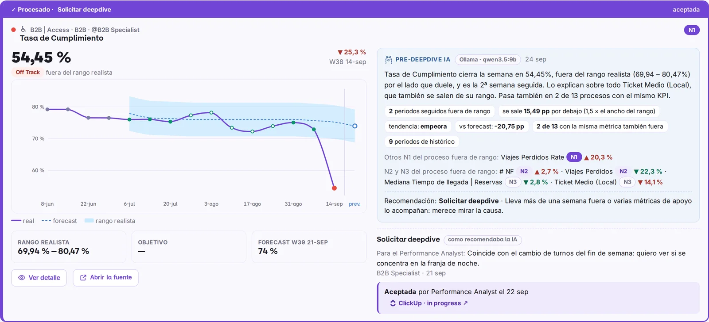
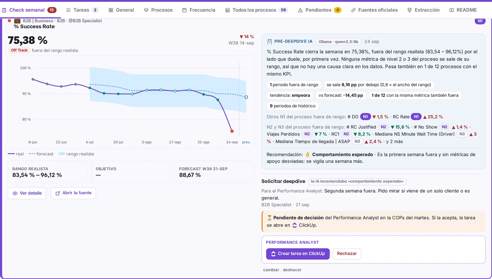
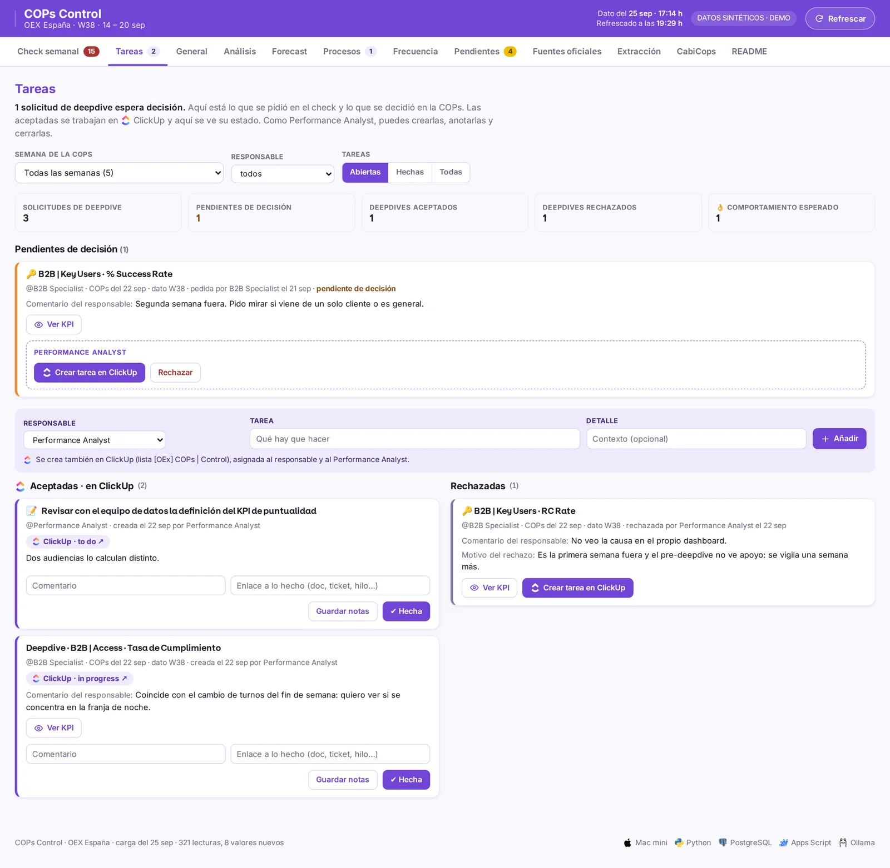
The model writes; it does not decide. The numbers in the pre-deepdive are computed in code and shown next to the text, the recommendation is only a suggestion, and the owner and the analyst make the calls that create work.
How each KPI is judged
First the realistic range: what is normal for that KPI according to its recent weeks, the median plus or minus 1.5 times its typical spread. August and Christmas are excluded, and a KPI needs at least four clean weeks before it is judged at all. Then the week's value is compared with that range and with the owner's target, if there is one.
| State | When | What to do |
|---|---|---|
| Off Track | Outside the realistic range on the side that hurts | Discuss it: something is happening that history does not explain |
| Average | Inside the range but short of the owner's target | Normal for us, but below where we want to be |
| On Track | Inside the range and meeting the target, or no target | Nothing to look at |
| High | Outside the range on the good side | Understand what went well, in case it can be repeated |
| Not evaluated | Fewer than 4 clean weeks of history, or an atypical week | Nothing can be said yet; calling it green would be a lie |
The bad side depends on the KPI: for a completion rate it is going down, for a cancellation rate it is going up, and the change is coloured by what it means, not by its direction. States are computed for every week of the series, so going back in time shows the state the KPI had then.
What a target does
The range is computed by the system ("if nothing changes, this is normal"); the target is set by a person ("this is where we want to be"). Owners set their own targets in the web app, with save and delete next to the field, and they apply in about ten minutes. A target makes the Average state possible, is drawn on the chart as a dotted line and lets a new KPI be evaluated before it has four weeks of history. Only the KPI's owner and two admins can set one; the web app checks it on save and the Mac mini checks again when applying it.
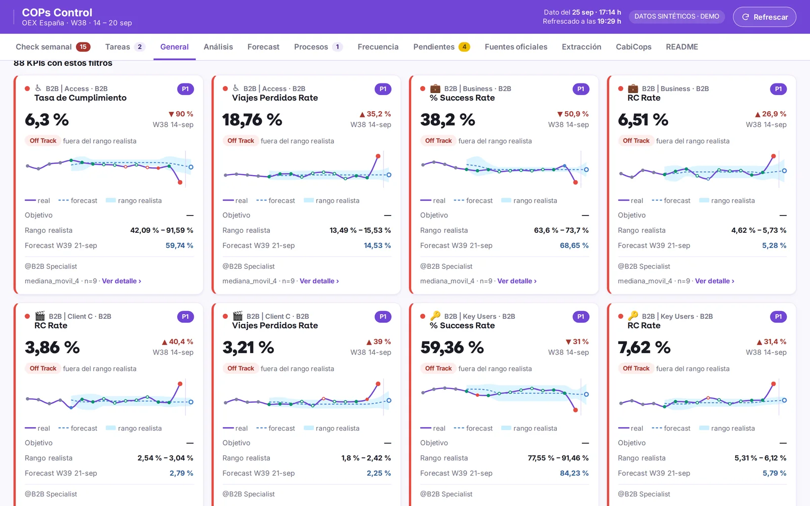
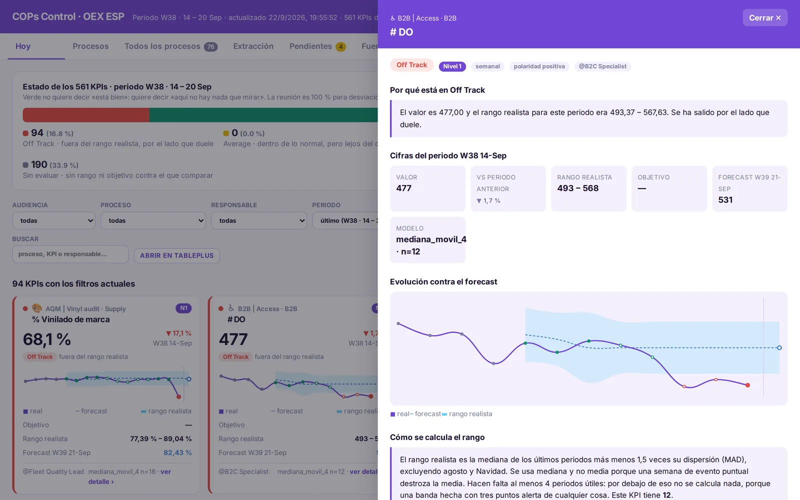
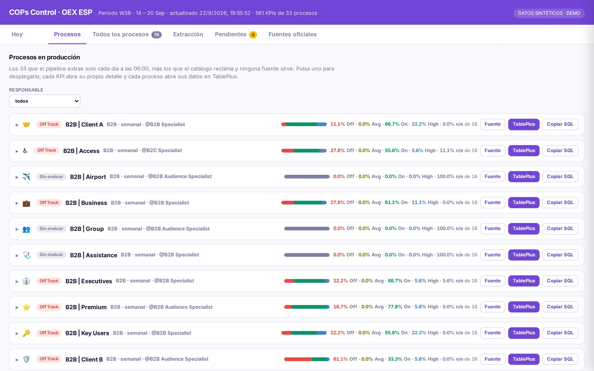
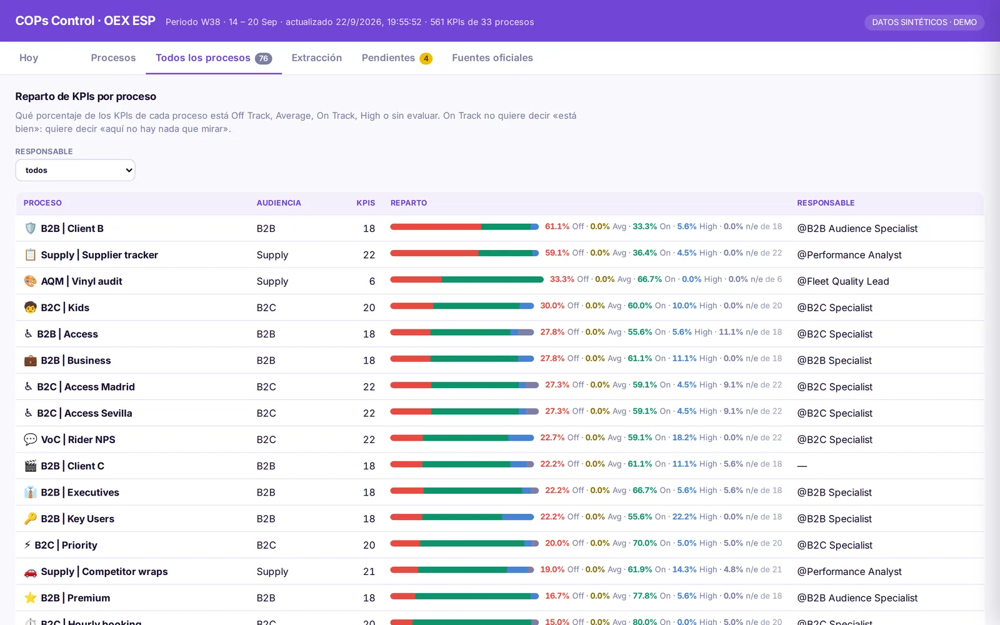
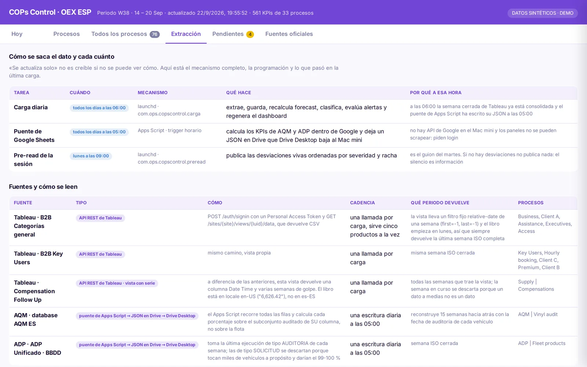
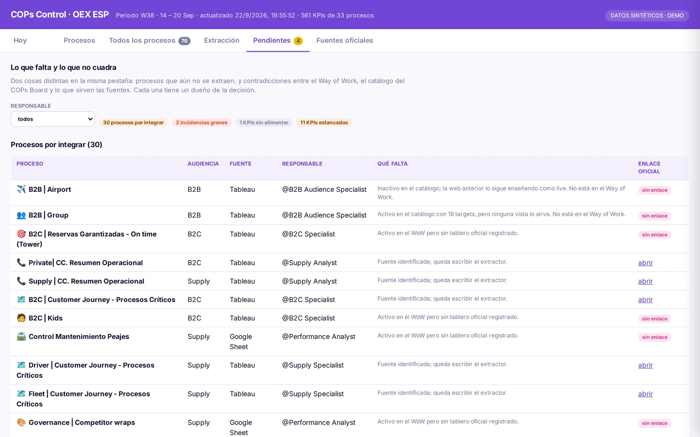
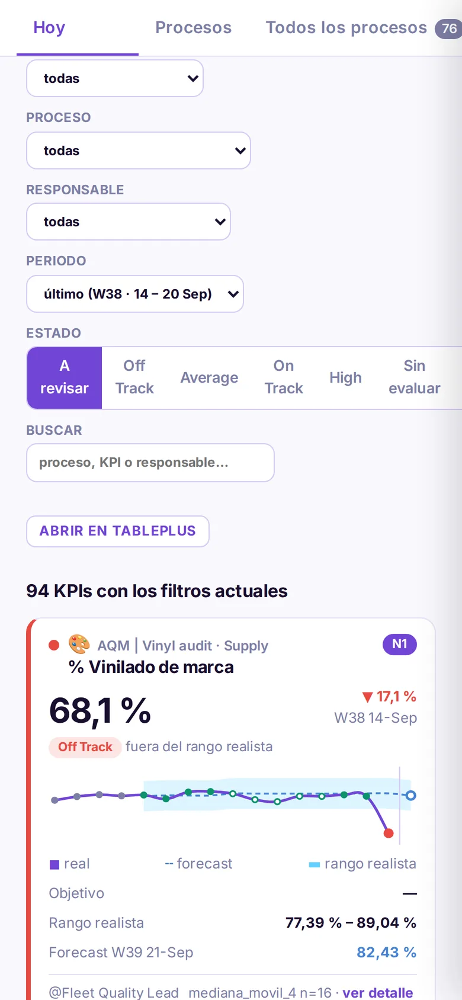
The Monday message links straight to the board, so it has to work on a phone too: the filters stack into one column and each KPI keeps its chart, its range and the reason for its state.
● Waiting time at pickup · 6.8 min · off track, above the realistic range for 2 weeks
● Completion rate · 91.2% · inside the range but below your target of 93%
● 14 more KPIs with nothing to look at
Open your processes:
…/exec?resp=hubsVersion 1: reading screenshots
With no API access at first, I built an n8n workflow that signed in to Tableau, downloaded each view as an image, asked a vision model to return the numbers as strict JSON and wrote them to a weekly sheet, with tiered Slack alerts. It covered 18 processes and premiered in the July review. It worked, but image extraction occasionally invented a digit, and there was no cheap way to catch it before the meeting. That was the reason for version 2.
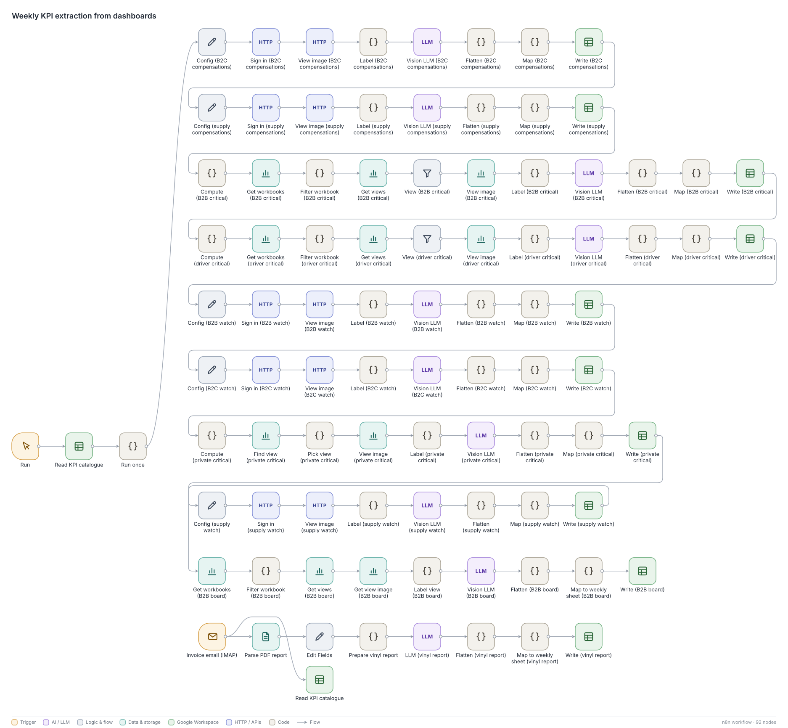
What is on hold, and why
The board and the weekly loop work; what waits is adding the processes it does not cover yet. The bottleneck is Tableau. Each workbook serves a different picture and almost none serves the complete KPI. I tested every technical path:
| Path | Result | Why |
|---|---|---|
| REST API, view data | partial | Works, but returns only what the sheet shows: usually the last week, sometimes one row |
| URL filters on the view | partial | Only on categorical filters; on a relative date they return an empty file |
| Temporary copy of the workbook with weeks as columns | partial | Brought 12 weeks of history for two workbooks, then deleted. Only works where the workbook can be downloaded |
| Metadata API | works | Finds sheets and owners; does not read data |
| Querying the data source directly | blocked | Access denied on every data source tried |
| Reusing the browser session | blocked | Rejects the API tokens |
| Subscriptions, connectors, AI on screenshots | blocked | Tried by the team: does not scale and cannot guarantee complete data |
With warehouse access
- All 56 active processes of the census on one board, with full history from day one instead of in ten weeks.
- One KPI, one versioned SQL query in the repository, so nobody argues about where a number comes from.
- Alerts out of the test loop, with ranges calibrated on months of history rather than seven points.
What I learned
- A census before a dashboard. Listing all 76 processes surfaced some the catalogue called active that no source served; they became decisions for their owners instead of silent gaps.
- A recommendation is not a decision. The model suggests, the owner proposes and the analyst decides; keeping those three apart is what made the team trust the AI text.
- Knowing when to stop is part of the work. Writing down why each path failed made the case for warehouse access in one page.
Screenshots show the real board rendered with synthetic values, generic process names and roles instead of people.